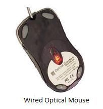
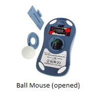
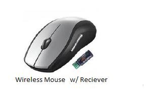
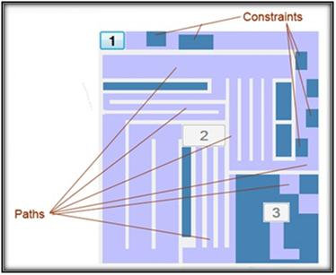
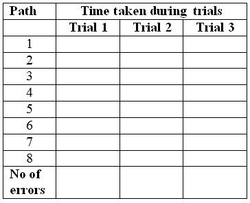

Mouse Sensitivity
Mouse sensitivity is important for a cartographer or a GIS specialist or an artist who will use the mouse as pencil to do complex tasks. For such applications one has to take care of minimizing drawing errors. Error minimizing can be achieved by making the mouse less sensitive or by increasing the area of interaction on the screen (zooming in - zooming out). For example - artists who use the mouse as a brush will be severely impaired if errors creep in while painting a figure with mouse pixel by pixel.
Also in the case of complex data such as large excel sheets it becomes important to point the mouse to the required cell and click on it. This involves eye movement, hand control and paying attention to the data simultaneously.Thus mouse-centered interaction design considers sensitivity of mouse, the control area and the response time.
Studying mouse control variations
The mouse usage and movement patterns are different for a child and that for an adult. For the elderly we need to make the mouse less sensitive in order to accomodate age related unsteadiness of the hand or fingers. The time and effort required to successfully achieve a desired task for a mouse oriented interaction differs for different age group users.
Mouse as a pointing device
The mouse is a hand held device that is used to guide the on-screen cursor (usually appearing as an arrow) to an area of choice, and then clicking a button to select that choice. You can select, move, open , drag and change objects on the screen with the mouse. Most computer programs now a days are designed to be mouse driven. The device can be a standard mouse, a child sized mouse, a trackball or a joystick. Below are few commercial examples:
Skills needed for learning to use a mouse
Visual skills:
Motor skills:
How to use a mouse effectively?
Your index finger should rest on the Left Mouse Button and your middle finger should rest on the Right Mouse Button. To use the scroll wheel move your index finger to the wheel. Remember the mouse can be very sensitive to small movements. Rest the heel of your hand on the surface behind the mouse and keep it on the surface when moving. Press gently and quickly on the mouse buttons when clicking.
Do not twist or rotate the mouse and make sure that the ends of the mouse point forward and back on the mouse pad. Grip the mouse gently with your thumb on one side and your ring & little finger on the other side.
Types of mouse clicks
Left Click or simply Click, selects object the pointer is on.Right Click opens a context sensitive menu (changes depending on object) containing commands.
Double-Click means pressing the left button twice in quick succession and will open files, folders & programs.
Click and Drag means pressing the left button and holding it down, then moving the mouse. This is used to select multiple objects and sections of text.
Drag and Drop begins with a click & drag on an object to move it to another location/folder.

After performing this experiment
- 1. You will be able to measure your mouse controlling ability in terms of time and task complexity.
2. You will be able to know your skill of cursor movements in constrained situations.
3. You will understand the importance of simultaneous visual and motor coordination for achieving the target selection using mouse.
- 1. A “MAZE” will be displayed on the screen.(see screenshot in figure. 1 )
2. Your task is to traverse the mouse-controlled cursor through the desired path (light colored tracks) of MAZE with sensitivity. You are expected to traverse the cursor through the path without hitting the constarints or blocks in the path which are colored in dark blue.
3. The complexity of the paths in the “MAZE” will increase periodically for successive trials.
4. You need to be alert and tactful in avoiding hitting the blocks/constraints coming in your way such as walls, bends and narrow track width. This requires motor and visual skill coordination.
 
5.There are three targets "1" , "2" and "3" on each path of the MAZE. ( see screenshot in figure. 1 )
- a)You will need to click on “1” to begin the experiment (trial).
b)Now move the cursor along light blue colored path to reach target “2”.
c)Avoid touching the walls and the dark blue colored constraints.
d)Click on “2” after you reach the target.
e)Now move the cursor along light blue colored path to reach target “3”.
f)Click on “3” after you reach the target.
g)Click on “Next Trial” button at end for new path.
7.After 3 trials, click on "time results" button to show time for the trials in table similar to figure. 2 above.
On error
- 1)If you happen to make an error while traversing the MAZE, an error message will be displayed in a dialogue window.
2)Press "OK" to resume and continue and now start from point "1".
3)On error do not traverse cursor within the MAZE for reaching point 1 or point 2.
4)Move the cursor to point 1 by traversing it from outside the MAZE, else you will once again
trigger the same error and enter an endless loop.
5)Thus do not traverse back to starting point through the MAZE after an error occurs.
Note
This simulation requires you to have .NET framework 4 or above installed on your PC. If you do not have .NET framework 4 installed on your PC, please refer to the following url.
http://www.microsoft.com/download/en/details.aspx?id=19
With .NET framework
After installing the .NET runtime framework 4 click on the link “Start Simulation" below to download the simulation component and run it consequently under .NET framework.
Start Simulation
Without .NET framework
If you are unable to install.NET runtime framework 4 you will be only able to view the experiment as a video demonstration.To do so click below.
View demo video here
Refer to the recorded data of your trials to answer the questions below ...
Q1.Which path took the minimum / maximum amount of time to traverse?
Q2.Which path was the easiest / toughest to traverse?
Q3.Which among the three trials were you least / most comfortable with?
Q4.Which among the three conditions did you find easiest / toughest?
Q5.List situations you have come across interacting with computers wherin sensitivity has effect on output.
- 1. Repeat all experiments by using mouse with non-preferred hand and compare the results.
2.Repeat all experiments with minimum as well as maximum mouse sensitivity and compare the results. To check and change your mouse sensitivity refer to the URL at the end of this page.
3.Try performing the experiment while carrying out some secondary task. This divides your attention. Compare time and error-count from the results.
4. Repeat the same experiment by changing the brightness and resolution level of your screen and compare the results.
5.Try to find optimal mouse sensitivity for young , middle and old aged people for maintaining same error rates.
6.Do you think this exercise will help you design screens for the elderly and the people with unsteady hands?
7.Explain how you will make use of this knowledge in designing a digital game?
Mouse sensitivity is the speed of a mouse pointer and how fast it moves on the screen. With increased sensitivity, the mouse moves faster and requires less effort to get across the screen. With low mouse sensitivity, a mouse moves slower and requires more effort to get across the screen but offers better precision for users not familiar with a mouse.
Refer to the url to learn how to change the mouse sensitivity
http://www.ehow.com/how_5079028_change-mouse-sensitivity.html
- http://www.kidsability.ca/uploads/Common/pdfs/ACS/Developing%20Early%20Mouse%20Skills.pdf
- http://www.learnanytime.co.uk/ICT/Mouse%20Movement%20Skills.htm
- http://www.graftonpl.lib.oh.us/Class%20Mouse.pdf
- http://www.suffolkextranet.nhs.uk/IMT/EssentialITSkillsProgramme/NHSELITE/MouseSkills.aspx
- http://www.sciencedirect.com/science/article/pii/S0003687005000694